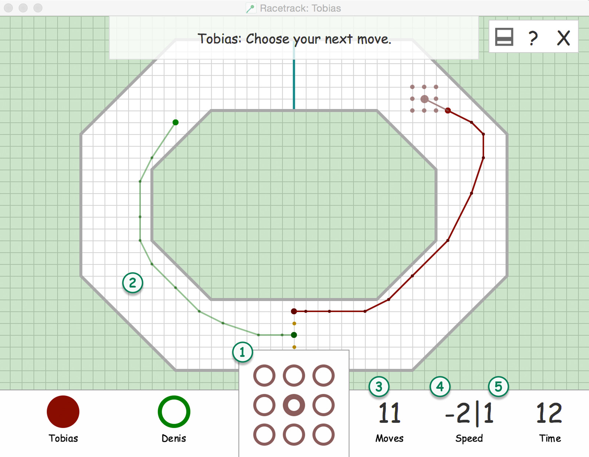

Gameplay
Lets have a look on how to actually play this game ;)
Start the game by choosing your initial starting position as one of the gold highlighted circles on the track. The goal is to reach the finish line (highlighted in blue) first.
After choosing those positions you can only increase or decrease your velocity by plus/minus one in each direction based on your previous velocity. Keep this in mind if you are getting to fast.

-
Use the 3x3 matrix to choose your new location. If you don't want to use the matrix you can hover over the game area / game track to select your next location. Both ways a performed click will be taken as a confirmation for a position.
-
The next possible locations will be shown on the grid. Only those locations are valid moves and can be performed. Any location outside the track or the current location of another player isn't a valid move.
-
Indicates the number of moves each player have done.
-
Shows your current velocity.
-
If you are running out of time, the last few seconds will be shown at the bottom right.